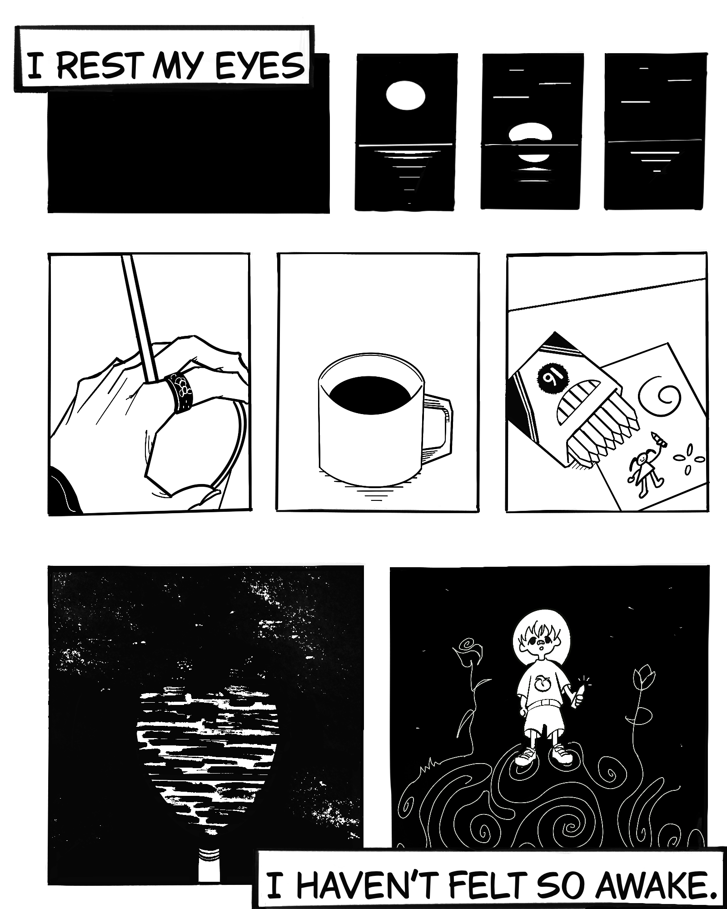
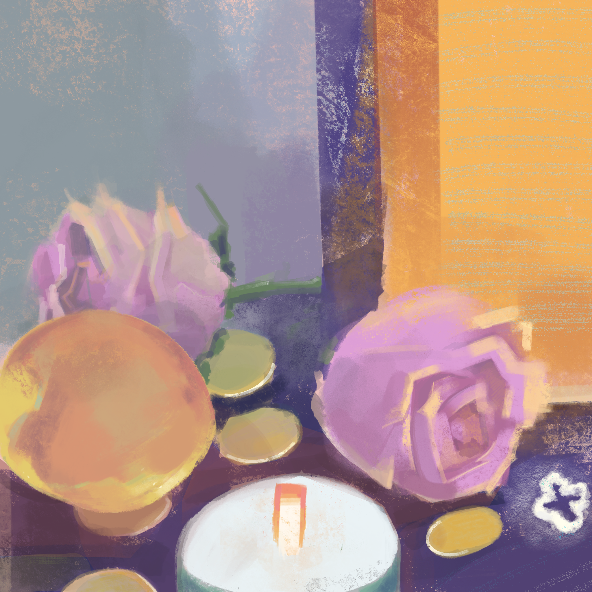
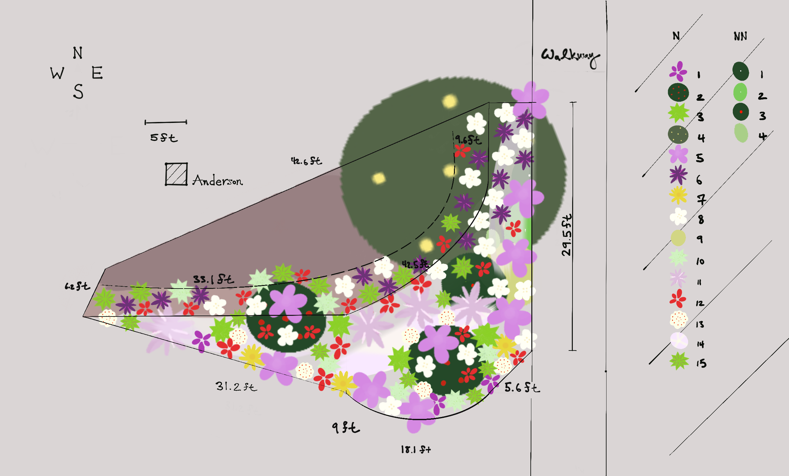
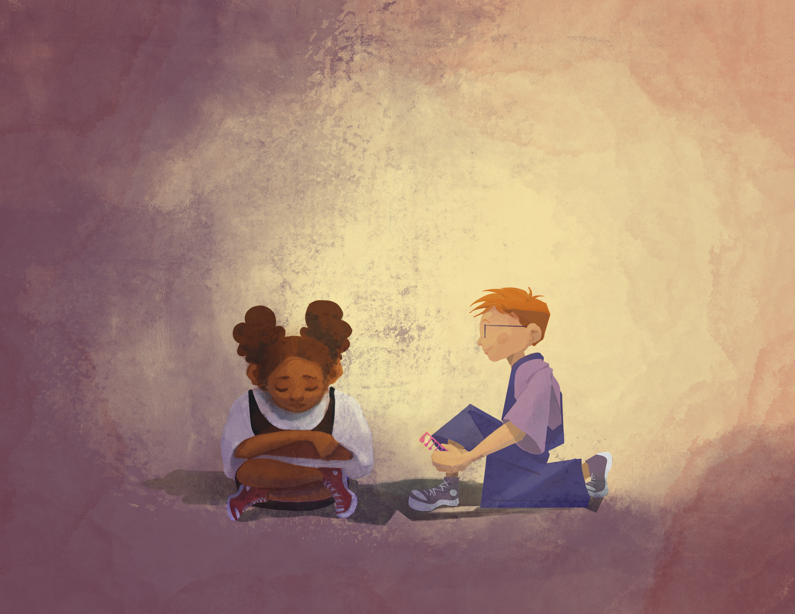

I connect art, storytelling, and human connection through mixed media design.
Four projects. Each a different medium, same obsession with making complexity feel human.




I'm Emily — a UCLA Biology grad who's spent the last four years pioneering storytelling from early ideas and concepts into finished visual products through illustration and design.
My background in biology and psychology taught me to pay attention to how humans think, feel, and connect. Through illustration and design, I create stories that carry both experiences and emotional resonance.
I hope to contribute my perspective and storytelling approach to teams and brands with meaningful ideas to share. If my work connects with your mission, I'd love to be part of the journey.
| Craft | Illustration, storyboarding, composition, shape language, color theory |
| Design | Brand identity, visual systems, print production, editorial layout, UI |
| Tools | Adobe Illustrator, Photoshop, InDesign, Procreate, Canva, Figma |
| Also | Conversational Mandarin & Spanish · CapCut · Microsoft Office |
Open to design internships, brand projects, and freelance illustration commissions. Based in Los Angeles.